EP Manquer d'AIR
Un 1er EP confié à Julien SOULA (aka Fryzzzer) pour la réalisation.
Trois titres comme une carte de visite.
Intitulé Manquer d’AIR, cet EP propose un intense et savoureux mélange entre post hardcore et indie punk.
« Explosif » est le terme approprié, avec ses mélodies pleines d’émotions,
son énergie brute et ses accroches immédiates.
Des textes qui bataillent et tiennent en haleine et en émoi.
À ranger quelque part entre La Dispute, Chaviré, SPORT, BâtonRouge, Touché Amoré…
Définition : rupture brutale, soudaine, totale. Le terme a été popularisé par le roman d’Émile Zola ou la
peinture de Monet. Dans tous les cas, c’est cet instant suspendu, celui où tout bascule, où tout ne sera plus
qu’autre chose. Cet autre chose marque l’origine du quatuor toulousain, qui épouse naturellement ce nom,
entre fuite en avant et espoir du renouveau.
Une recette dynamique et sensible qui se balade entre des influences post hardcore et indie punk bien
digérées. On retrouve cette énergie brute, cette verve tranchante. Ces quatre lascars y vont à pleine balle. Les
guitares sont aussi nerveuses que mélodieuses. La batterie aligne des salves rythmiques endiablées. La basse
pulse. La voix, sur le fil, exulte et libère.L’intensité mélodique s’allie à des refrains catchy et ces chœurs qui se
reprennent à l’unisson, comme pour défier le sort et faire communion. Le tout sur le fil d’une rage contenue,
à la limite de la cassure. Un melting-pot musical, à fleur de mots. Des mots avec lesquels on joue, qui nous
bousculent, nous malmènent et nous éclairent.
Cette équipe fait le pari de sa langue maternelle pour une écriture réaliste, directe, désespérément positive.
Se comprendre pour partager au-delà de la puissance du son.
| 07/12/2024 | 20h | L'Engrenage | Balma |
| 29/01/2025 | 21h | Bar le Ravelin | Toulouse |